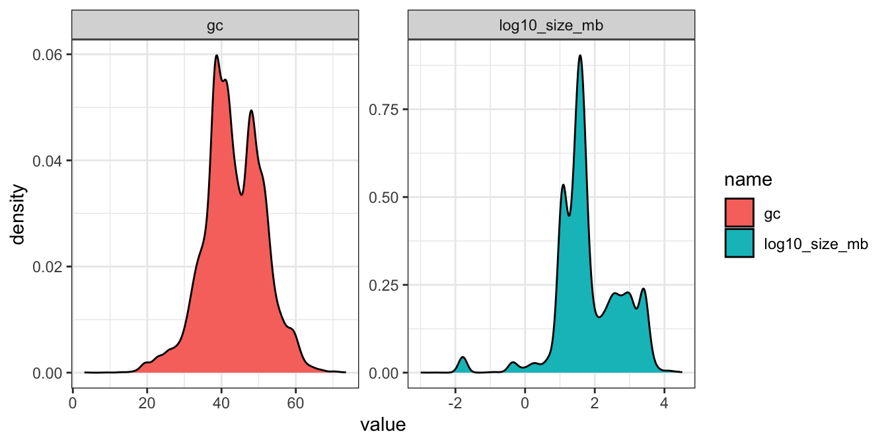
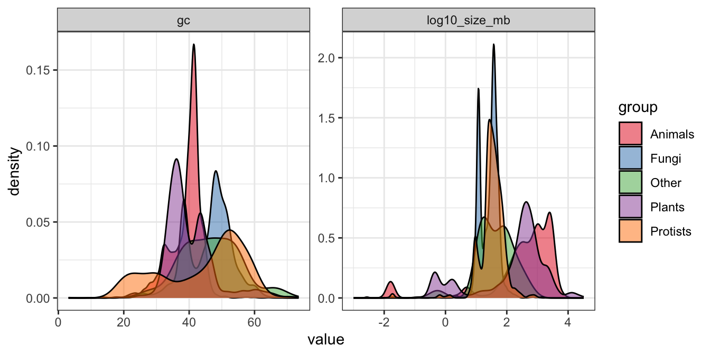
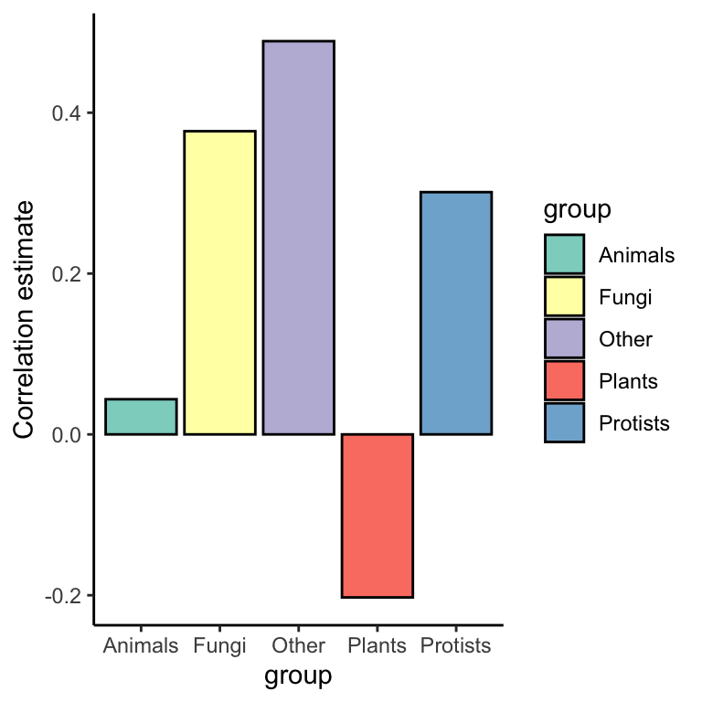
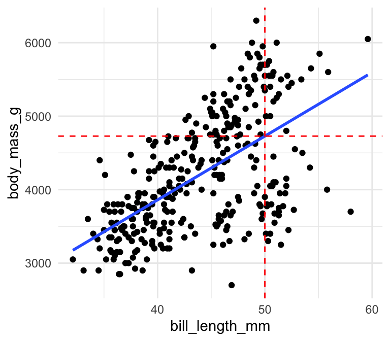
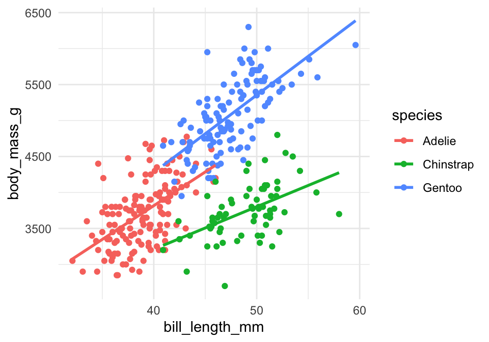
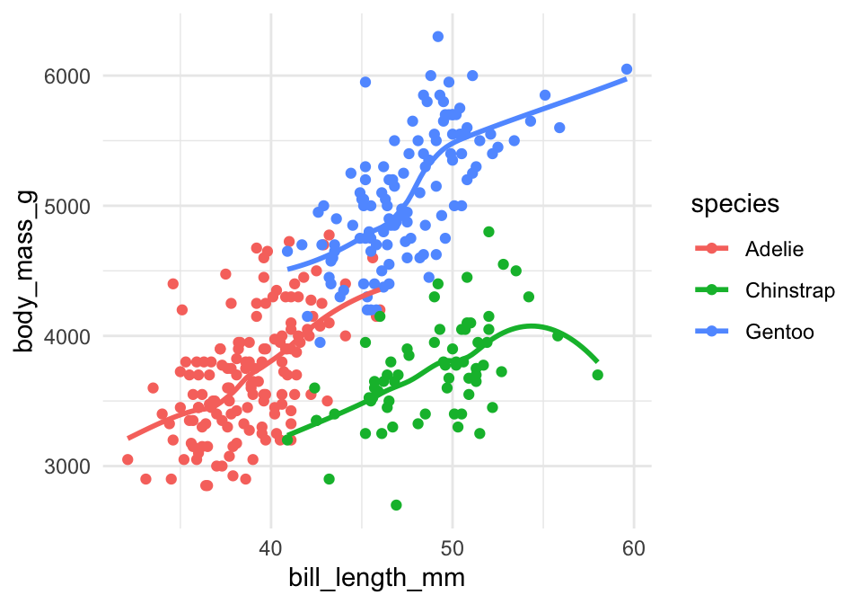
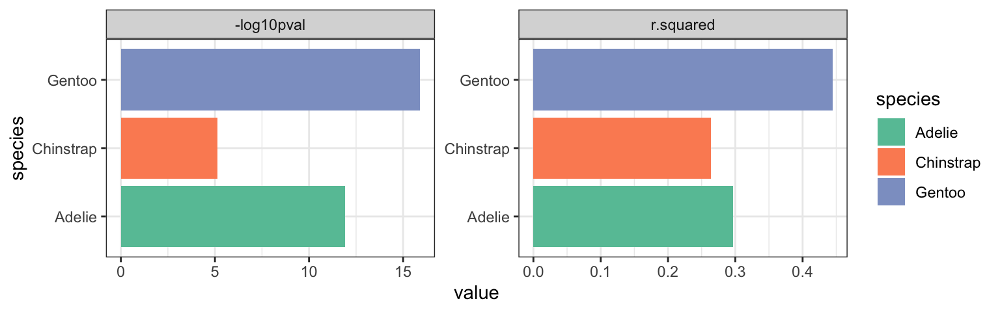
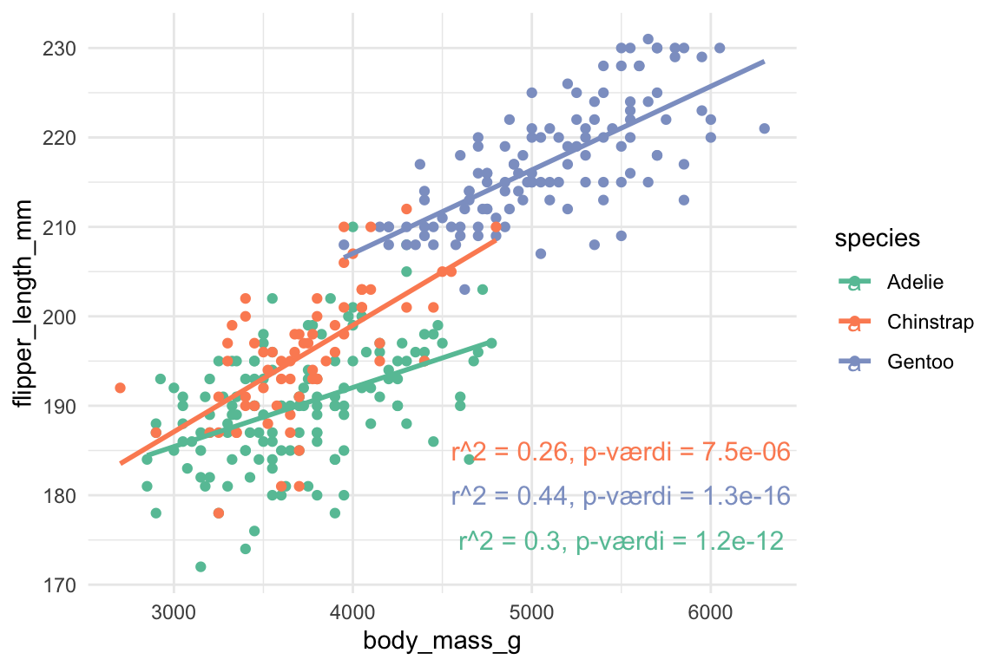

Chapter 8 Visualisering af trends


#load following packages
library(ggplot2)
library(tidyverse)
library(broom)
library(glue)
library(ggsignif)8.1 Indledning og læringsmål
8.1.1 Læringsmål
Du skal være i stand til at
- Anvende
nest()ogmap()strukturen til at gentage en korrelationsanalyse over flere forskellige datasæt. - Bruge
ggplotfunktionengeom_smooth()til at visualisere lineær regression eller loess-kurver. - Kombinere
map()/nest()oglm()til at beregne regressionsstatistikker for flere lineære regressionsmodeller på samme tid og sammenligne dem medanova().
8.1.2 Introduktion til kapitlet
I dette kapitel viser jeg flere eksempler på processen, hvor man anvender group_by() og nest() og dernæst map()-funktioner for at lave reproducerbare statistiske analyser. Vi fokuserer på eksempler med korrelationsanalyse og lineære regressionsmodeller, men den overordnede ramme kan anvendes i mange forskellige kontekster.
8.1.3 Videoressourcer
OBS: Der er mange videoer til i dag, men de gentager samme proces fra sidste emner med group_by/nest og map mange gange (med forskellige statistiske metoder).
- Video 1: Korrelationskoefficient med
nest()ogmap()- Jeg gennemgår processen langsomt med en korrelationsanalyse
- Jeg introducerer
glancetil at lave outputtet fra statistiske metoder i pæn-format.
OBS: Jeg sagde “antal gener” flere gange i videoen, men variablen log10_size_mb er faktisk genomstørrelse i megabaser.
Link her hvis det ikke virker nedenunder: https://player.vimeo.com/video/709225323
- Video 2: Lineær regression linjer med ggplot2
- Jeg viser hvordan man tilføjer regression linjer på et plot
- Jeg sammenligne linjen med resultatet fra
lm()
Link her hvis det ikke virker nedenunder: https://player.vimeo.com/video/709225203
- Video 3: Lineær regression med
nest()ogmap()- Den proces igen fra Video 1 men anvendte på lineær regression
Link her hvis det ikke virker nedenunder: https://player.vimeo.com/video/709225158
- Video 4: Multiple linær regression model
- Den samme process men med flere modeller og flere uafhængige variabler
Link her hvis det ikke virker nedenunder: https://player.vimeo.com/video/709225266
- Video 5: anova+map (OBS: muligvis mest udfordrende del i kurset)
- Benyt funktionen
anovafor at sammenligne to modeller, beregnet på datasættetpenguins, og få outputtet i “tidy”-format med funktionentidy() - Lav en funktion med
anova, der kan anvendes over alle arter medmap2() - Omsæt p-værdier fra sammenligningerne til et plot og tilføj signifikansannotationer
- Benyt funktionen
Link her hvis det ikke virker nedenunder: https://player.vimeo.com/video/710108716
8.2 nest() og map(): eksempel med korrelation
Man laver en korrelationsanalyse i R ved at benytte cor.test() (cor() fungerer også, hvis du kun ønsker at beregne koefficienten og ikke signifikans). Forestil dig, at du gerne vil finde ud af korrelationen mellem GC-indhold (variablen gc, procent G/C baser i genomet) og genomstørrelse (variablen log10_size_mb) i datasættet eukaryotes fra sidste lektion.
I det følgende plotter jeg en density mellem gc og den transformerede variabel log10_size_mb, som er log10 genomstørrelse (ikke antal gener, som jeg sagde i videoen).
eukaryotes <- eukaryotes %>%
mutate(log10_size_mb = log10(size_mb))eukaryotes %>%
mutate(log10_size_mb = log10(size_mb)) %>%
select(log10_size_mb,gc) %>%
pivot_longer(everything()) %>%
ggplot(aes(x=value,fill=name)) +
geom_density(colour="black") +
facet_wrap(~name,scales="free") +
theme_bw()## Warning: Removed 388 rows containing non-finite values (`stat_density()`).
Plottet ser ud til at have flere “peaks”, og jeg mistænker, at der kan være nogle understrukturer indenfor dataene - eksempelvis på grund af de forskellige organismegrupper i variablen Group (Animals, Plants osv.). I det følgende benytter jeg alligevel cor.test() til at teste for korrelation mellem gc og log10_size_mb over hele datasættet:
my_cor_test <- cor.test(eukaryotes %>% pull(gc),
eukaryotes %>% pull(log10_size_mb))
my_cor_test##
## Pearson's product-moment correlation
##
## data: eukaryotes %>% pull(gc) and eukaryotes %>% pull(log10_size_mb)
## t = -15.678, df = 11118, p-value < 2.2e-16
## alternative hypothesis: true correlation is not equal to 0
## 95 percent confidence interval:
## -0.1652066 -0.1288369
## sample estimates:
## cor
## -0.1470715Outputtet fra cor.test (og mange andre metoder i R) er ikke særlig velegnet til at bruge indenfor en dataframe, så jeg introducerer en funktion, der hedder glance(), som findes i R-pakken broom. Funktionen glance() anvendes til at omdanne outputtet fra en statistisk test (f.eks. cor.test() eller lm()) til et tidy dataframe. Det gør det nemmere, for eksempel til at lave et plot, eller til at samle statistikker fra forskellige tests.
library(broom)
my_cor_test %>% glance()FALSE # A tibble: 1 × 8
FALSE estimate statistic p.value parameter conf.low conf.high method alter…¹
FALSE <dbl> <dbl> <dbl> <int> <dbl> <dbl> <chr> <chr>
FALSE 1 -0.147 -15.7 8.25e-55 11118 -0.165 -0.129 Pearson's pr… two.si…
FALSE # … with abbreviated variable name ¹alternativeMan kan se, at over hele datasættet, er der en signifikant negativ korrelation (estimate -0.147 og p-værdi 8.25054^{-55}) mellem de to variabler. Men jeg er imidlertid stadig mistænkelig over for eventuelle forskelle blandt de fem grupper fra variablen group.
Jeg vil gerne gentage den samme analyse for de fem grupper fra variablen group hver for sig. En god tilgang til at undersøge det er at bruge rammen med group_by() og nest(), som vi lærte sidst.
8.2.1 Korrelation over flere datasæt på en gang
Jeg tjekker først fordelingen af de to variabler opdelt efter variablen group:
eukaryotes %>%
select(log10_size_mb,gc,group) %>%
pivot_longer(-group) %>%
ggplot(aes(x=value,fill=group)) +
geom_density(colour="black",alpha=0.5) +
#geom_histogram(bins=40,alpha=0.5,colour="black") +
scale_fill_brewer(palette = "Set1") +
facet_wrap(~name,scales="free") +
theme_bw()## Warning: Removed 388 rows containing non-finite values (`stat_density()`).
Man kan se, at der er forskelle blandt de fem grupper, og der kan sagtens forekomme forskellige sammenhænge mellem de to variabler. I det følgende benytter jeg rammen group_by() + nest(), som blev introduceret i sidste lektion.
Trin 1: Benyt group_by() + nest()
Jeg anvender group_by() på variablen group og derefter funktionen nest() for at opdele eukaryotes i fem forskellige datasæt (gemt i samme dataframe i en kolonne ved navn data):
eukaryotes_nest <- eukaryotes %>%
group_by(group) %>%
nest()
eukaryotes_nest## # A tibble: 5 × 2
## # Groups: group [5]
## group data
## <chr> <list>
## 1 Other <tibble [51 × 19]>
## 2 Protists <tibble [888 × 19]>
## 3 Plants <tibble [1,304 × 19]>
## 4 Fungi <tibble [6,064 × 19]>
## 5 Animals <tibble [3,201 × 19]>Trin 2: Definer korrelationsfunktion
Lad os definere korrelationstesten mellem gc og log10_size_mb i en funktion.
- Brug
~lige i starten for at fortælle R, at man arbejder med en funktion. - Specificer et bestemt datasæt (som er en delmængde af
eukaryotes) indenforcor.test()med.x - For det specifikke datasæt benytter jeg
.x %>% pull(gc)og.x %>% pull(size_mb)til at udtrække de relevante vektorer for at udføre testencor.test.
cor_test <- ~cor.test(.x %>% pull(gc),
.x %>% pull(log10_size_mb))Vi vil gerne få statistikkerne fra cor.test() i en pæn form, så vi tilføjer glance() til den ovenstående funktion:
library(broom)
my_cor_test <- ~cor.test(.x$gc,log10(.x$size_mb)) %>% glance()Trin 3: Brug map() på det nestede datasæt
Nu lad os køre vores funktion på det nestede dataframe. Vi bruger map() til at anvende funktionen my_cor_test på hvert af de fem datasæt. Det gøres ved at bruge funktionen map() indenfor funktionen mutate() til at oprette en ny kolonne, der hedder test_stats, hvor resultaterne fra hver af de fem tests gemmes.
eukaryotes_cor <- eukaryotes_nest %>%
mutate(test_stats=map(data,my_cor_test))
eukaryotes_cor## # A tibble: 5 × 3
## # Groups: group [5]
## group data test_stats
## <chr> <list> <list>
## 1 Other <tibble [51 × 19]> <tibble [1 × 8]>
## 2 Protists <tibble [888 × 19]> <tibble [1 × 8]>
## 3 Plants <tibble [1,304 × 19]> <tibble [1 × 8]>
## 4 Fungi <tibble [6,064 × 19]> <tibble [1 × 8]>
## 5 Animals <tibble [3,201 × 19]> <tibble [1 × 8]>Trin 4: Anvend unnest() for at kunne se resultaterne
For at kunne se statistikkerne bruger jeg funktionen unnest() på den nye variabel test_stats:
eukaryotes_cor <- eukaryotes_cor %>%
unnest(test_stats)
eukaryotes_cor## # A tibble: 5 × 10
## # Groups: group [5]
## group data estimate statistic p.value param…¹ conf.low conf.…² method
## <chr> <list> <dbl> <dbl> <dbl> <int> <dbl> <dbl> <chr>
## 1 Other <tibble> 0.489 3.80 4.22e- 4 46 0.238 0.679 Pears…
## 2 Protists <tibble> 0.301 9.26 1.54e- 19 860 0.239 0.361 Pears…
## 3 Plants <tibble> -0.203 -7.37 3.10e- 13 1267 -0.255 -0.149 Pears…
## 4 Fungi <tibble> 0.377 31.2 3.87e-198 5884 0.355 0.399 Pears…
## 5 Animals <tibble> 0.0437 2.42 1.57e- 2 3053 0.00825 0.0790 Pears…
## # … with 1 more variable: alternative <chr>, and abbreviated variable names
## # ¹parameter, ²conf.highTrin 5: Lav et plot fra statistikker
Vi kan bruge det direkte i et plot. Jeg fokuserer på korrelationskoefficienten i variablen estimate og omsætter den til et plot som følger:
cor_plot <- eukaryotes_cor %>%
ggplot(aes(x=group,y=estimate,fill=group)) +
geom_bar(stat="identity",colour="black") +
scale_fill_brewer(palette = "Set3") +
ylab("Correlation estimate") +
theme_classic()
cor_plot
Bemærk at den overordnede proces her med cor.test ligner processen, hvis man anvender andre metoder såsom t.test, lm osv. Jeg gennemgår lidt om lineær regression og visualisering, og dernæst anvender processen på et eksempel med funktionen lm() og datasættet penguins.
8.3 Lineær regression - visualisering
8.3.1 Lineære trends
Vi skifter over til datasættet penguins, som findes i pakken palmerpenguins. Man kan se i det følgende scatterplot mellem bill_length_mm og body_mass_g, at der er plottet en bedste rette linje gennem punkterne, som viser, at der er en positiv sammenhæng mellem de to variabler.
## `geom_smooth()` using formula = 'y ~ x'
Husk, at den bedste rette linje har en formel \(y = a + bx\), hvor \(a\) er skæringspunktet, og \(b\) er hældningen af linjen. Ideen med simpel lineær regression er, at man gerne vil finde de bedste mulige værdier for \(a\) og \(b\) for at plotte ovenstående linje således, at afstanden mellem linjen og punkterne bliver minimeret. Uden at gå i detaljer om, hvordan det beregnes, kan man bruge funktionen lm() som følger:
mylm <- lm(body_mass_g~bill_length_mm,data=penguins)
mylm##
## Call:
## lm(formula = body_mass_g ~ bill_length_mm, data = penguins)
##
## Coefficients:
## (Intercept) bill_length_mm
## 388.85 86.79Skæringspunktet er således 388.85 og hældningen er 86.79. Det betyder, at hvis variablen bill_length_mm stiger med 1, så ville den forventede body_mass_g stige med 86.79. Man kan således bruge linjen til at lave forudsigelser. For eksempel, hvis jeg målte en ny pingvin og fandt ud af, at den havde en bill_length_mm på 50 mm, kunne jeg bruge min linje til at gætte dens body_mass_g:
y <- mylm$coefficients[1] + mylm$coefficients[2] * 50
y## (Intercept)
## 4728.433Jeg forventer derfor, at en pingvin med en næblængde på 50 mm vil have en vægt omkring 4728.4331411 g:
## `geom_smooth()` using formula = 'y ~ x'
8.3.2 geom_smooth(): lm trendlinjer
Indbygget i ggplot2 er en funktion kaldet geom_smooth(), som kan bruges til at tilføje den bedste rette linje til plottet. Man benytter den ved at specificere + geom_smooth(method="lm") i plot-kommandoen:
ggplot(penguins,aes(x=bill_length_mm,y=body_mass_g)) +
geom_point() +
theme_minimal() +
geom_smooth(method="lm",se=FALSE)## `geom_smooth()` using formula = 'y ~ x'
Det er nemt at bruge, og man kan tilføje et konfidensinterval, hvis man ønsker det. I ovenstående plot specificerede jeg se=FALSE, men hvis jeg angav se=TRUE (som er standard), ville jeg få følgende plot:
ggplot(penguins,aes(x=bill_length_mm,y=body_mass_g)) +
geom_point() +
theme_minimal() +
geom_smooth(method="lm",se=TRUE)## `geom_smooth()` using formula = 'y ~ x'
8.3.3 geom_smooth(): flere lm trendlinjer på samme plot
For at tilføje en bedste rette linje for hver af de tre species i stedet for alle dataene samlet, er det meget nemt i ggplot2: man angiver bare colour=species indenfor æstetik (aes):
ggplot(penguins,aes(x=bill_length_mm,y=body_mass_g,colour=species)) +
geom_point() +
theme_minimal() +
geom_smooth(method="lm",se=FALSE)## `geom_smooth()` using formula = 'y ~ x'
Så kan vi se, at der faktisk er tre forskellige trends her, så det giver god mening at bruge de tre forskellige linjer i stedet for kun én.
8.3.4 Trendlinjer med method=="loess"
I ggplot er vi ikke begrænset til method="lm" indenfor geom_smooth(). Lad os prøve med method="loess" i stedet:
library(palmerpenguins)
penguins <- drop_na(penguins)
ggplot(penguins,aes(x=bill_length_mm,y=body_mass_g,colour=species)) +
geom_point() +
theme_minimal() +
geom_smooth(method="loess",se=FALSE)## `geom_smooth()` using formula = 'y ~ x'
På denne måde kan man fange trends, som ikke nødvendigvis er lineære - men bemærk, at det er mere ligetil at beskrive og fortolke en lineær trend (og beregne forudsigelser ud fra en lineær trend).
8.4 Plot linear regresion estimates
For at finde vores estimates og tjekke signifikansen af en lineær trend, arbejder vi direkte med den lineære model funktion lm():
my_lm <- lm(body_mass_g~bill_length_mm,data=penguins)
summary(my_lm)##
## Call:
## lm(formula = body_mass_g ~ bill_length_mm, data = penguins)
##
## Residuals:
## Min 1Q Median 3Q Max
## -1759.38 -468.82 27.79 464.20 1641.00
##
## Coefficients:
## Estimate Std. Error t value Pr(>|t|)
## (Intercept) 388.845 289.817 1.342 0.181
## bill_length_mm 86.792 6.538 13.276 <2e-16 ***
## ---
## Signif. codes: 0 '***' 0.001 '**' 0.01 '*' 0.05 '.' 0.1 ' ' 1
##
## Residual standard error: 651.4 on 331 degrees of freedom
## Multiple R-squared: 0.3475, Adjusted R-squared: 0.3455
## F-statistic: 176.2 on 1 and 331 DF, p-value: < 2.2e-16Husk, at de tal, der er vigtige her (se også emne 1 og 2):
- p-værdien:
<2e-16- den uafhængige variabelbill_length_mmhar en signifikant effekt/betydning forbody_mass_g. - R-squared værdien: - den viser den andel af variancen i
body_mass_g, sombill_length_mmforklarer:- Hvis R-squared er tæt på 1, er der tæt på en perfekt korrespondance mellem
bill_length_mmogbody_mass_g. - Hvis R-squared er tæt på 0, er der nærmest ingen korrespondance.
- Hvis R-squared er tæt på 1, er der tæt på en perfekt korrespondance mellem
8.4.1 Anvendelse af lm() over nestede datasæt
Vi kan benytte den samme proces som ovenpå i korrelationsanalysen. Vi bruger group_by til at opdele efter de tre species og så “nester” vi de tre datarammer:
penguins_nest <- penguins %>%
group_by(species) %>%
nest()
penguins_nest## # A tibble: 3 × 2
## # Groups: species [3]
## species data
## <fct> <list>
## 1 Adelie <tibble [146 × 7]>
## 2 Gentoo <tibble [119 × 7]>
## 3 Chinstrap <tibble [68 × 7]>Jeg definerer en funktion, hvor man kan lave lineær regression og tilføjer glance() for at få modelstatistikkerne i en pæn form.
#husk ~ og skriv .x for data og IKKE penguins
lm_model_func <- ~lm(body_mass_g~bill_length_mm,data=.x) %>% glance()Vi kører en lineær model på hver af de tre datasæt med map() og ved at specificere funktionen lm_model_func, som vi definerede ovenfor. Vi bruger mutate() ligesom før til at tilføje statistikkerne som en ny kolonne kaldet lm_stats:
penguins_lm <- penguins_nest %>%
mutate(lm_stats=map(data,lm_model_func))
penguins_lm## # A tibble: 3 × 3
## # Groups: species [3]
## species data lm_stats
## <fct> <list> <list>
## 1 Adelie <tibble [146 × 7]> <tibble [1 × 12]>
## 2 Gentoo <tibble [119 × 7]> <tibble [1 × 12]>
## 3 Chinstrap <tibble [68 × 7]> <tibble [1 × 12]>Til sidst bruger vi funktionen unnest() på vores statistikker:
penguins_lm <- penguins_lm %>%
unnest(cols=lm_stats)
penguins_lm## # A tibble: 3 × 14
## # Groups: species [3]
## species data r.squared adj.r…¹ sigma stati…² p.value df logLik AIC
## <fct> <list> <dbl> <dbl> <dbl> <dbl> <dbl> <dbl> <dbl> <dbl>
## 1 Adelie <tibble> 0.296 0.291 386. 60.6 1.24e-12 1 -1076. 2157.
## 2 Gentoo <tibble> 0.445 0.440 375. 93.6 1.26e-16 1 -873. 1753.
## 3 Chinstrap <tibble> 0.264 0.253 332. 23.7 7.48e- 6 1 -490. 987.
## # … with 4 more variables: BIC <dbl>, deviance <dbl>, df.residual <int>,
## # nobs <int>, and abbreviated variable names ¹adj.r.squared, ²statisticNu kan vi se, at vi har fået en dataramme med vores lineære modelstatistikker. Jeg tager r.squared og p.value og omsætter dem til et plot for at sammenligne dem over de tre species af pingviner.
penguins_lm %>%
select(species,r.squared,p.value) %>%
mutate("-log10pval" = -log10(p.value)) %>%
select(-p.value) %>%
pivot_longer(-species) %>%
ggplot(aes(x=species,y=value,fill=species)) +
geom_bar(stat="identity") +
scale_fill_brewer(palette = "Set2") +
facet_wrap(~name,scale="free",ncol=4) +
coord_flip() +
theme_bw()
8.4.2 Funktionen glue() til at tilføje etiketter
Det kan være nyttigt at tilføje etiketter til vores plots, der indeholder de statistikker, vi netop har beregnet. For at gøre dette kan vi benytte følgende kode. Vi tager vores datasæt penguins_lm med vores beregnede statistikker og bruger det til at lave et datasæt, som kan benyttes i geom_text() i vores trend plot. Funktionen glue() (fra pakken glue) er en praktisk måde at sammensætte r.squared og p.value værdierne i en streng, der beskriver vores forskellige trends (lidt ligesom paste i base-R).
library(glue) # til at sammensætte værdierne i en etiket
label_data <- penguins_lm %>%
mutate(
rsqr = signif(r.squared, 2), # afrunder til 2 signifikante cifre
pval = signif(p.value, 2),
label = glue("r^2 = {rsqr}, p-værdi = {pval}")
) %>%
select(species, label)
label_dataFALSE # A tibble: 3 × 2
FALSE # Groups: species [3]
FALSE species label
FALSE <fct> <glue>
FALSE 1 Adelie r^2 = 0.3, p-værdi = 1.2e-12
FALSE 2 Gentoo r^2 = 0.44, p-værdi = 1.3e-16
FALSE 3 Chinstrap r^2 = 0.26, p-værdi = 7.5e-06Vi kan tilføje vores etiketdata ved hjælp af geom_text(). x og y specificerer, hvor på plottet teksten skal placeres, og husk at angive data=label_data og label=label indenfor aes(), når det drejer sig om en variabel i label_data.
ggplot(penguins, aes(body_mass_g, flipper_length_mm, colour=species)) +
geom_point() +
geom_smooth(method = "lm", se = FALSE) +
geom_text(
x = 5500,
y = c(175,180,185),
data = label_data, aes(label = label), #specificerer etiketdata fra ovenstående
size = 4
) +
scale_color_brewer(palette = "Set2") +
theme_minimal() ## `geom_smooth()` using formula = 'y ~ x'
8.5 Multipel regression og model sammenligning
Vi kan også benytte samme ramme som ovenfor til at sammenligne forskellige modeller på tværs af de samme tre datasæt. Her definerer jeg lm_model_func, som kun har sex som den uafhængige variabel, og jeg bygger videre på denne model ved at definere lm_model_func2 og lm_model_func3, hvor jeg tilføjer ekstra uafhængige variabler, bill_length_mm og flipper_length_mm. Jeg er interesseret i, hvor meget af variansen i body_mass_g, de tre variabler kan forklare tilsammen, og om der er forskelle mellem de tre arter i species.
lm_model_func <- ~lm(body_mass_g ~ sex ,data=.x)
lm_model_func2 <- ~lm(body_mass_g ~ sex + bill_length_mm ,data=.x)
lm_model_func3 <- ~lm(body_mass_g ~ sex + bill_length_mm + flipper_length_mm ,data=.x)Bemærk, at jeg endnu ikke har tilføjet glance() her, men jeg har planer om at gøre det lidt senere i processen for at undgå at få for mange statistikker i min dataframe med mine resultater. Jeg anvender først group_by() efter species og derefter nest():
penguins_nest <- penguins %>%
group_by(species) %>%
nest()
penguins_nest## # A tibble: 3 × 2
## # Groups: species [3]
## species data
## <fct> <list>
## 1 Adelie <tibble [146 × 7]>
## 2 Gentoo <tibble [119 × 7]>
## 3 Chinstrap <tibble [68 × 7]>Her bruger jeg map tre gange indenfor den samme mutate-funktion for at konstruere de tre modeller for hver art (ni modeller i alt).
penguins_nest_lm <- penguins_nest %>%
mutate(
model_sex = map(data,lm_model_func),
model_sex_bill = map(data,lm_model_func2),
model_sex_bill_flipper = map(data,lm_model_func3))
penguins_nest_lm## # A tibble: 3 × 5
## # Groups: species [3]
## species data model_sex model_sex_bill model_sex_bill_flipper
## <fct> <list> <list> <list> <list>
## 1 Adelie <tibble [146 × 7]> <lm> <lm> <lm>
## 2 Gentoo <tibble [119 × 7]> <lm> <lm> <lm>
## 3 Chinstrap <tibble [68 × 7]> <lm> <lm> <lm>Nu vil jeg gerne trække nogle statistikker fra modellerne, så jeg kan sammenligne dem. Jeg vil gerne udføre samme proces på alle ni modeller - hvor jeg benytter funktionen glance til at få outputtet i en tidy-form, og så trække r.squared ud bagefter for at undgå at få for mange statistikker i min nye dataframe.
get_r2_func <- ~.x %>% glance() %>% pull(r.squared)Nu gælder det om at køre ovenstående funktion på alle mine modeller, som er gemt i tre kolonner, model_sex,model_sex_bill og model_sex_bill_flipper. Jeg gør dette indenfor map, så det også bliver udført for hver af de tre arter.
penguins_nest_lm <- penguins_nest_lm %>%
mutate(model_sex_r2 = map_dbl(model_sex, get_r2_func),
model_sex_bill_r2 = map_dbl(model_sex_bill, get_r2_func),
model_sex_bill_flipper_r2 = map_dbl(model_sex_bill_flipper, get_r2_func))
penguins_nest_lm %>% select(species,model_sex_r2,model_sex_bill_r2,model_sex_bill_flipper_r2)## # A tibble: 3 × 4
## # Groups: species [3]
## species model_sex_r2 model_sex_bill_r2 model_sex_bill_flipper_r2
## <fct> <dbl> <dbl> <dbl>
## 1 Adelie 0.545 0.563 0.602
## 2 Gentoo 0.649 0.691 0.716
## 3 Chinstrap 0.291 0.331 0.476Omdann til et plot:
penguins_nest_lm %>%
pivot_longer(cols=c("model_sex_r2","model_sex_bill_r2","model_sex_bill_flipper_r2")) %>%
ggplot(aes(x=species,y=value,fill=name)) +
geom_bar(stat="identity",position="dodge") +
theme_minimal()
Man kan se i plottet, at body_mass_g for arten “Gentoo” bedst forklares af de tre variabler, og den laveste r.squared er i det tilfælde, hvor variablen sex er den eneste uafhængige variabel og species er “Chinstrap”.
8.5.1 anova til at sammenligne de forskellige modeller
Årsagen til, at jeg valgte at bruge glance() i en ny funktion til at udtrække r.squared værdier, var fordi jeg gerne ville bevare mine modeller i deres oprindelige form, så de kunne bruges indenfor anova(). Med anova() kan jeg direkte sammenligne to modeller og dermed få en p-værdi, der tester hypotesen om, at den ekstra variabel i den ene model signifikant forklarer den afhængige variabel (når man tager højde for de variabler, der er fælles for begge modeller).
I det følgende skriver jeg en funktion, hvor jeg kan sammenligne to modeller med anova og udtrække p-værdien:
aov_func <- ~anova(.x,.y) %>% tidy() %>% pluck("p.value",2)- ~ fordi det er en funktion (som jeg benytter for hver art og model sammenligning - i alt 9 gange!)
anovafor at sammenligne modellerne, der er angivet ved.xog.y(vi brugermap2, der tager to input i stedet for én, som imap)tidy()fungerer ligesom glance, men giver oversigt over statistikker og flere linjer - herunder p-værdienpluck- jeg vil kun have én statistik (“p.value”) - og den er gemt på anden position.
Se følgende kode for anvendelse af anova og tidy på modellerne model_sex og model_sex_bill i arten “Adelie” (da jeg har brugt pluck med “1”, hvilket betyder den første position i listen):
myaov <- anova(penguins_nest_lm %>% pluck("model_sex",1),
penguins_nest_lm %>% pluck("model_sex_bill",1))
myaov %>% tidy #p.value for comparing the two models is in the second position## # A tibble: 2 × 7
## term df.re…¹ rss df sumsq stati…² p.value
## <chr> <dbl> <dbl> <dbl> <dbl> <dbl> <dbl>
## 1 body_mass_g ~ sex 144 1.39e7 NA NA NA NA
## 2 body_mass_g ~ sex + bill_length_… 143 1.33e7 1 551805. 5.92 0.0162
## # … with abbreviated variable names ¹df.residual, ²statisticMan kan se, at p-værdien er 0.016, som er signifikant, og det betyder, at den mere komplekse model, der også inddrager bill_length_mm, er den model, vi accepterer (dvs. effekten af variablen bill_length_mm på body_mass_g er signifikant i vores endelige model).
Man kan lave en lignende sammenligning mellem samtlige par af modeller for de tre arter:
penguins_nest_lm <- penguins_nest_lm %>%
mutate(model_sex_vs_model_sex_bill = map2_dbl(model_sex,model_sex_bill,aov_func),
model_sex_vs_model_sex_bill_flipper = map2_dbl(model_sex,model_sex_bill_flipper,aov_func),
model_sex_bill_vs_model_sex_bill_flipper = map2_dbl(model_sex_bill,model_sex_bill_flipper,aov_func))
penguins_nest_lm %>% select(species,model_sex_vs_model_sex_bill,model_sex_vs_model_sex_bill_flipper,model_sex_bill_vs_model_sex_bill_flipper)## # A tibble: 3 × 4
## # Groups: species [3]
## species model_sex_vs_model_sex_bill model_sex_vs_model_sex_bill_fl…¹ model…²
## <fct> <dbl> <dbl> <dbl>
## 1 Adelie 0.0162 0.0000730 2.73e-4
## 2 Gentoo 0.000142 0.00000592 1.93e-3
## 3 Chinstrap 0.0540 0.0000621 7.95e-5
## # … with abbreviated variable names ¹model_sex_vs_model_sex_bill_flipper,
## # ²model_sex_bill_vs_model_sex_bill_flipperDet kunne være nyttigt at inddrage p-værdierne i ovenstående plot med r.squared værdierne, for at se om der er en signifikant effekt, når man tilføjer flere variabler til modellen, samtidig med at r.squared stiger. I det følgende omsætter jeg r.squared statistikkerne for kun “Chinstrap” til et plot:
library(ggsignif)
stats_plot <- penguins_nest_lm %>%
filter(species=="Chinstrap") %>%
pivot_longer(cols=c("model_sex_r2","model_sex_bill_r2","model_sex_bill_flipper_r2")) %>%
ggplot(aes(x=name,y=value,fill=name)) +
geom_bar(stat="identity",position="dodge") +
coord_flip() +
theme_bw()
stats_plot
I det følgende tilføjer jeg funktionen geom_signif til plottet - den tillader mig at tilføje signifikanslinjer/annotationer til plottet - det vil sige, den viser, hvilke to modeller jeg sammenligner, og angiver stjerner i henhold til de beregnede p-værdier. Du er velkommen til at kopiere min kode og tilpasse den til dine egne behov.
- Når jeg sammenligner modellerne “model_sex” og “model_sex_bill” for “Chinstrap”, er p-værdien over 0.05, så tilføjelsen af
bill_length_mmi modellen var ikke signifikant - jeg tilføjer ingen stjerner men skriver “.” for at matche outputtet ilm. - Når jeg sammenligner modellerne “model_sex” og “model_sex_bill_flipper”, kan jeg se, at p-værdien er under 0.05, så der er en signifikant effekt -
bill_length_mmogflipper_length_mmforklarer den afhængige variabelbody_mass_g, udover variablensex. Jeg angiver “***“, fordi p-værdien er under 0.001 (se signifikanskoder ilmsummary). - Indstillingen
y_positionangiver, hvor jeg vil placere linjerne.
stats_plot +
geom_signif(comparisons = list(c("model_sex_r2", "model_sex_bill_r2")),
annotations=".", y_position = 0.35, tip_length = 0.03) +
geom_signif(comparisons = list(c("model_sex_bill_r2", "model_sex_bill_flipper_r2")),
annotations="***", y_position = 0.5, tip_length = 0.03) +
geom_signif(comparisons = list(c("model_sex_r2", "model_sex_bill_flipper_r2")),
annotations="***", y_position = 0.55, tip_length = 0.03)
8.6 Problemstillinger
Problem 1) Quizzen på Absalon.
Husk at have indlæste følgende:
library(tidyverse)
library(broom)
data(msleep)
data(iris)Problem 2) Basic correlation øvelse
Brug
data(mtcars)ogcor.test()til at lave et test af korrelationen mellem variablerneqsecogdrat.Tip: hvis du foretrækker at undgå
$i analysen til at speciefice en kolon indenforcor.test()kan du brugemtcars %>% pull(qsec)i stedet formtcars$qsec.Tilføj funktionen
glance()til din resultat fracor.test()til at se de statistikker i tidy form (installer pakkenbroomhvis nødvendigt). Kan du genkende de statistikker fracor.test()i den resulterende dataramme?
Problem 3) Nesting øvelse
For datasættet msleep, anvende group_by() og nest() til at få en nested dataframe hvor datasættet er opdelt efter variablen vore. Kalder det for msleep_nest.
- Tilføj en ny kolon til
msleep_nestmedmutate, der heddern_rowsog viser antallet af rækker i hvert af de fire datasæt - husk følgende struktur:
msleep_nest %>%
mutate("n_rows" = map(???,???)) #erstatte ??? her- I dette tilfælde kan man ændre
maptilmap_dbl- gør det.
Problem 4) Multiple korrelation
Vi vil gerne beregne den korrelation mellem variablerne sleep_total og sleep_rm til hver af de fire datasæt lagret i msleep_nest
- Tilpas følgende funktion så at vi teste korrelation mellem de to variabler.
- Tilføj
glance()så at vi få vores data i tidy form.
cor_test <- ~cor.test(????,???) #erstatte ??? og tilføj glance funktionBrug
map()indenformutate()med din funktion for at beregne de korrelation statistikker til hver af de fire datasæt.Unnest din nye kolonne bagefter
Lav barplots af
estimateog-log10(p.value)med den resulterende datarammePrøv også at tilføj
%>% pluck("estimate",1)til dincor_testfunktion og kig på resultat
Problem 5) Linear regression øvelse
Åbn LungCapData (herunder Age.Groups):
LungCapData <- read.csv("https://www.dropbox.com/s/ke27fs5d37ks1hm/LungCapData.csv?dl=1")
glimpse(LungCapData) #se variabler navne## Rows: 725
## Columns: 6
## $ LungCap <dbl> 6.475, 10.125, 9.550, 11.125, 4.800, 6.225, 4.950, 7.325, 8.…
## $ Age <int> 6, 18, 16, 14, 5, 11, 8, 11, 15, 11, 19, 17, 12, 10, 10, 13,…
## $ Height <dbl> 62.1, 74.7, 69.7, 71.0, 56.9, 58.7, 63.3, 70.4, 70.5, 59.2, …
## $ Smoke <chr> "no", "yes", "no", "no", "no", "no", "no", "no", "no", "no",…
## $ Gender <chr> "male", "female", "female", "male", "male", "female", "male"…
## $ Caesarean <chr> "no", "no", "yes", "no", "no", "no", "yes", "no", "no", "no"…Anvende
lm()medLungCapsom afhængig variabel ogAgesom uafhængig variabel.Hvad er den intercept og slope af den beregnede linje?
Prøv at tilføj funktionen
glance()til dinlmfunktion og angive værdierr.squaredogp.value.
Problem 6) Lave et scatter plot af Age på x-aksen og LungCap på y-aksen.
- Ændre linjen til
geom_smooth(method="lm") - Ændre linjen til
geom_smooth(method="lm",se=FALSE) - Nu specificer en forskellige farve efter
Gender. Hvordan er de to linje forskellige? - Nu specificer en forskellige farve efter
Smoke. Hvordan er de to linje forskellige?
Problem 7) Lineær regression øvelse over multiple datasæt
Vi vil gerne udføre lineær regression med LungCap og Age men opdelte efter variablen Smoke. OBS: Vi følger sammen process som i kursus notaterne men med LungCapData i stedet for Penguins - tjek gerne kursusnotaterne for inspiration.
a) Anvende group_by() og nest() for at opdele dit datsasæt efter Smoke
b) Lav en funktion, lm_model_func, som beregner en lineær regression med LungCap som afhængig variabel og Age som uafhængig variabel. Tilføj glance() til lm_model_func.
c) Anvende map() med din funktion indenfor mutate() til at tilføje en ny kolon som hedder lm_stats til din dataramme. Husk at unnest kolonnen lm_stats for at kunne se statistikker.
d) Fortolkning - er variablen lungCap bedre forklaret er variablen Age i rygere eller ikke-rygere?
Problem 8)
I nedenstående er tre modeller, alle med LungCap som afhængig variabel alle som tager højde for Age:
my_lm_func1 <- ~lm(LungCap ~ Age ,data=.x)
my_lm_func2 <- ~lm(LungCap ~ Age + Gender ,data=.x)
my_lm_func3 <- ~lm(LungCap ~ Age + Gender + Height,data=.x)a) Anvend map til at lave tre nye kolonner i LungCapData_nest, en til hver af de tre modeller (uden glance() her, så vi kan brug vores lm objekts senere).
b) Skriv en funktion my_r2_func, der udtrækker “r.squared” værdierne fra dine modeller (her refererer .x i funktionen ikke til en dataframe men til en beregnet model - hvad er det, der skal tilføjes?). Lav tre yderligere kolonner i LungCapData_nest, hvor du køre din funktion på dine modeller med map (outputtet skal være dbl).
my_r2_func <- ...LungCapData_nest <- LungCapData_nest %>%
mutate("Age_only_R2" = ...,
"Age_Gender_R2" = ...,
"Age_Gender_Height_R2"= ...)c) Omsæt dine beregnede r.squared værdier til et plot
Problem 9
a) Skriv en funktion hvor man anvende anova() til at sammenligne to modeller, .x og .y og dernæst udtrækker p-værdien (det er den samme funktion som i kursusnotaterne).
my_aov_func <- ...b) Anvend din funktion med map2 til at sammenligne de tre modeller fra sidste spørgsmål.
c) Lav et plot med dine resultater.
d) Tilføj signifikans annotations på plottet med funktionen geom_signif() (tilpas gerne kode fra kursusnotaterne).